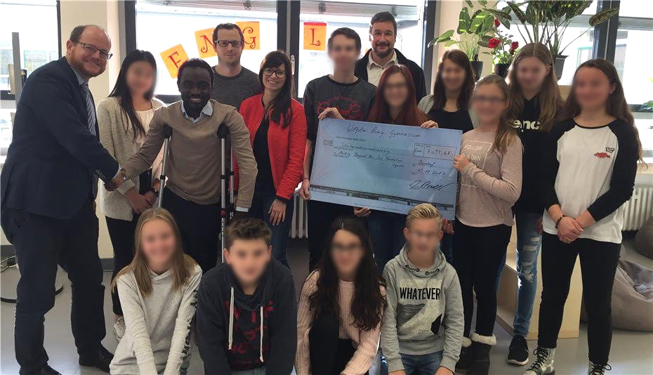
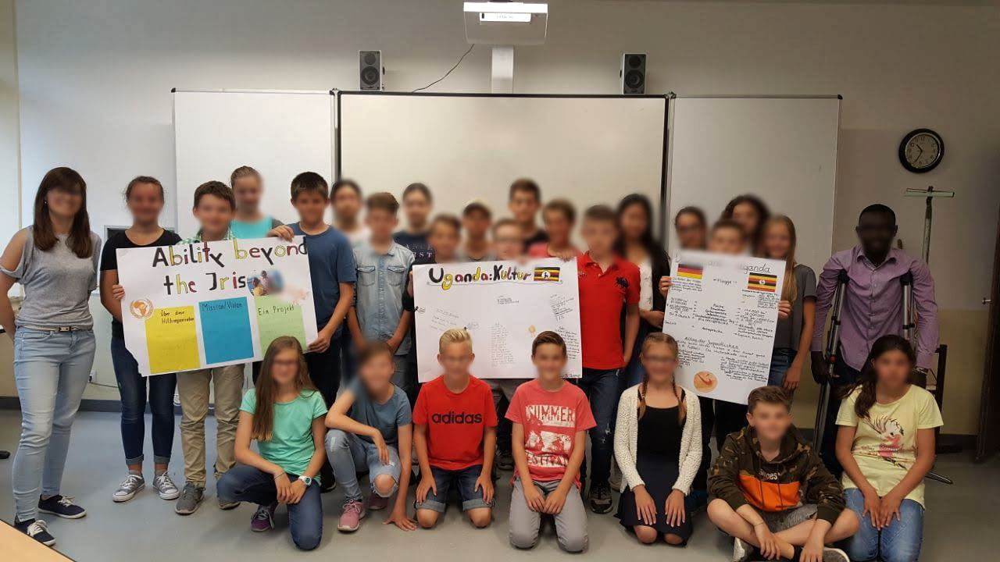
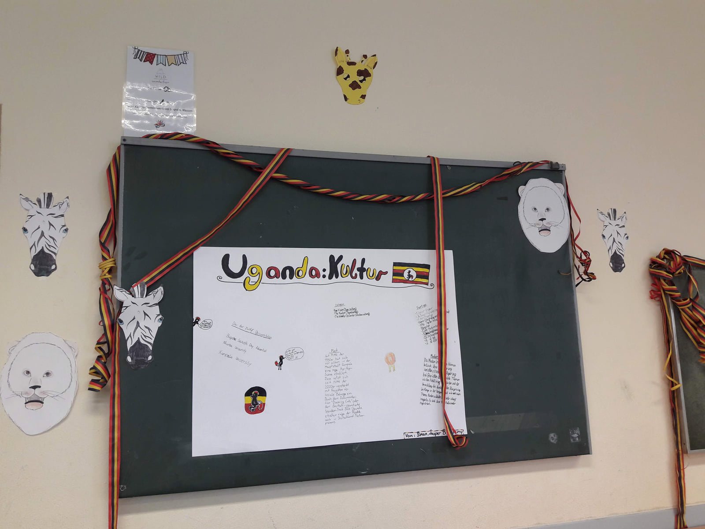
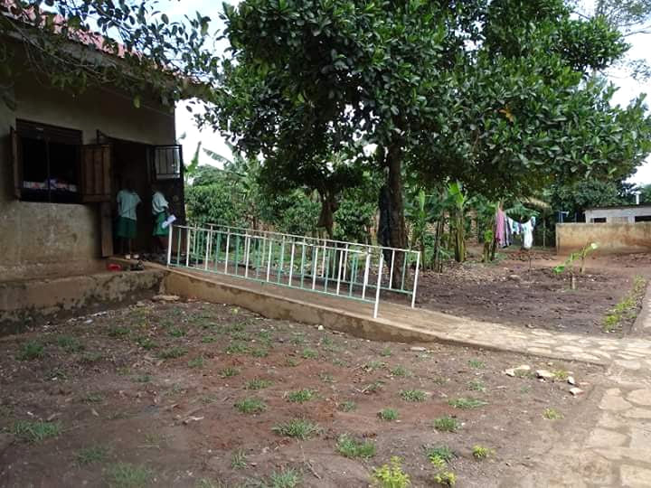
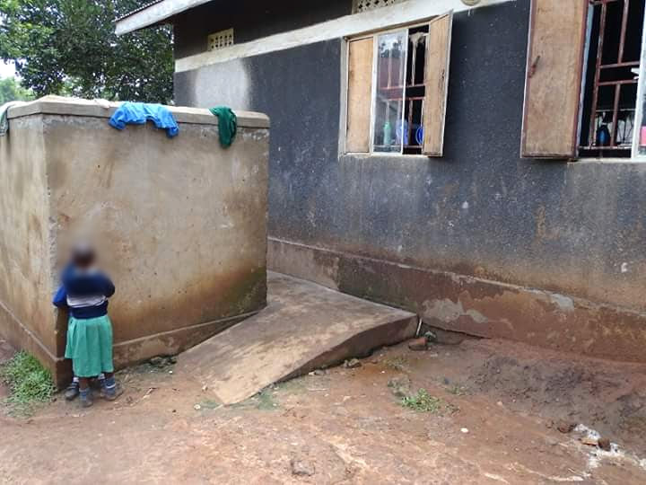
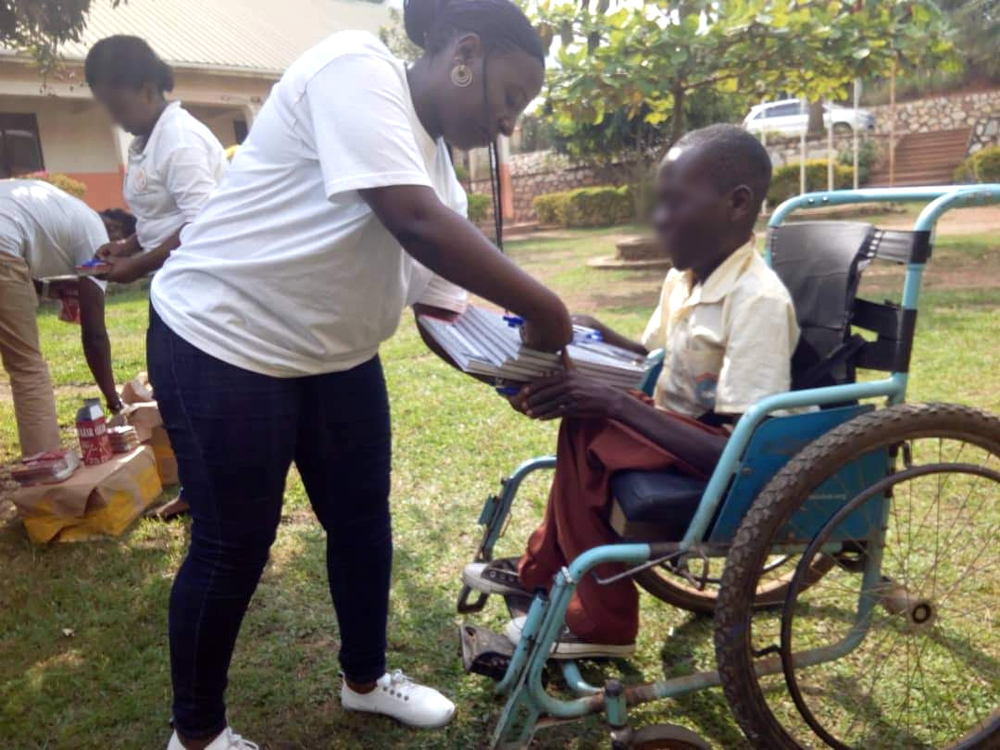
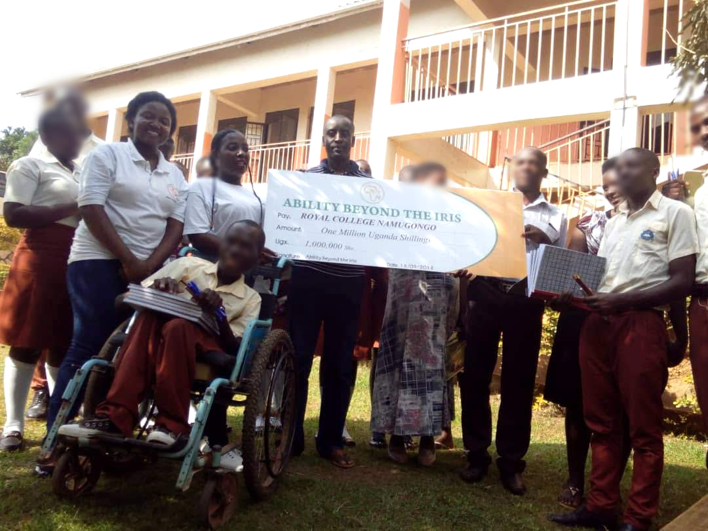
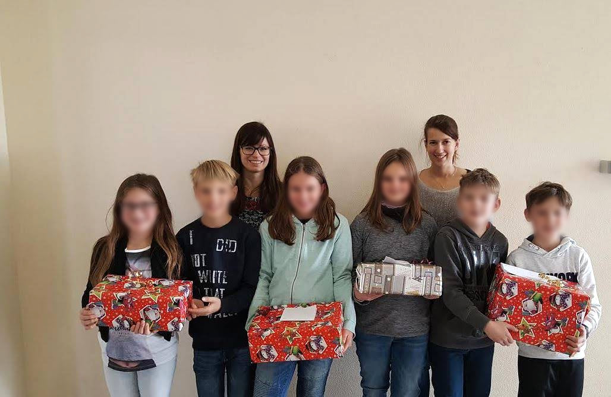
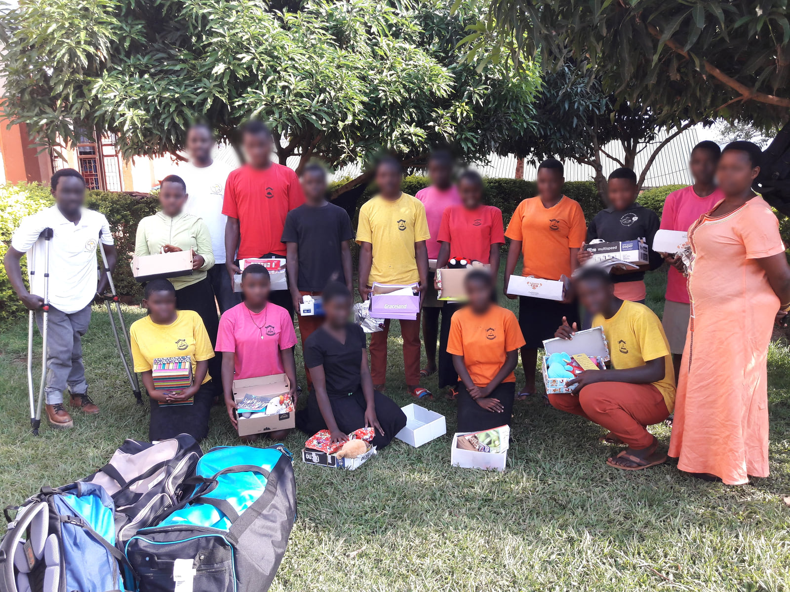

ABI Uganda partnership · Project archive
School solidarity between Bendorf and Uganda
Learning materials, accessible school routes and Christmas gifts
Historical project report with photographs from 2017 and 2018
Pupils at Wilhelm-Remy-Gymnasium Bendorf raised approximately €7,000 to support fellow learners in Uganda through Anchored Bridges Initiatives (ABI), formerly Ability Beyond the Iris. Their support helped provide school materials and Christmas gift boxes and finance two access ramps at Royal College Namugongo. The partnership also brought learning about Uganda into English classes in Bendorf.
Pupils supporting fellow learners
The partnership connected pupil-led fundraising in Germany with practical support delivered through ABI in Uganda. A cheque-handover photograph records the pupils’ contribution, while photographs from Uganda show school materials being handed to students by ABI team members in white T-shirts.
Royal College Namugongo is the secondary school and parent school of Royal Junior Namugongo. The older students in white school shirts shown in the handover photographs belong to Royal College. The school-fee support for six pupils at Royal Junior is described separately.

The approximately €7,000 was a shared fundraising pool supporting the school partnership, the Rwengoma Primary School feeding initiative and six Royal Junior pupils’ fees. The latter two activities are described in separate reports.
Learning about Uganda in Bendorf
The exchange extended beyond fundraising. Pupils prepared and displayed information about Uganda, its culture and the work of ABI. The photograph named 20170624_163328.jpg records one of these displays in an English classroom in Bendorf on 24 June 2017.
The school’s English department also describes using the Uganda partnership in selected classes to support intercultural learning. The classroom work gave pupils a setting in which to discuss their counterparts and connect their learning with the practical support they were organising.


School context: Wilhelm-Remy-Gymnasium Bendorf English department.
School materials and accessible entrances
Donated funds helped finance two ramps at Royal College Namugongo. The photographs document a ramp with metal railings and a second concrete entrance ramp. These changes were intended to make school routes easier to use for students with mobility disabilities.
The partnership also supplied scholastic materials. An ABI team member is shown giving books to a student using a wheelchair. A separate handover photograph records a cheque for UGX 1,000,000 to Royal College Namugongo, dated 18 September 2018, documenting one contribution within the wider support.




Christmas gift boxes shared across the partnership
Pupils in Germany also prepared Christmas gift boxes for their counterparts in Uganda. The project account identifies books, shoes, pens, colouring materials and pencils among the donated items.
The photographs show wrapped boxes in Germany and recipients in Uganda displaying boxes and their contents. These personal contributions complemented the school materials and accessibility work. They gave pupils a direct way to take part in the partnership and support fellow learners.


We thank the pupils and staff of Wilhelm-Remy-Gymnasium Bendorf, the participating schools in Uganda, ABI and all supporters who helped turn the pupils’ fundraising and gifts into practical educational support.
Download the project report as a PDF · Download the editable Word report
Programme figures and outcomes are reported by the project team.